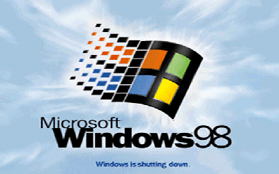

Windows Desktop Operating System
Microsoft Windows and The 29 Years Journey
Microsoft Windows has seen nine major versions since its first release in 1985. Over 29 years later, Windows looks very different but somehow familiar with elements that have survived the test of time, increases in computing power and – most recently – a shift from the keyboard and mouse to the touchscreen.
Windows 1

It's all started here for Windows. Windows 1 was released in November 1985 and was Microsoft’s first true attempt at a graphical user interface in 16-bit. Development was headed by the founder Bill Gates and ran on top of MS-DOS, which relied on command-line input. It was notable because it relied on use of a mouse before the mouse was a common computer input device. To help users become familiar with this odd input system, Microsoft included a game, Reversi that relied on mouse control, not the keyboard, to get people used to moving the mouse around and clicking onscreen elements.
Windows 2

Two years after the release of Windows 1, Windows 2 replaced it in December 1987. The big innovation for Windows 2 was that windows could overlap each other, and it also introduced the ability to minimise or maximise windows instead of “iconising” or “zooming”.The control panel, where various system settings and configuration options were collected together in one place, was introduced in Windows 2 and survives to this day.Microsoft Word and Excel also made their first appearances running on Windows 2.
Windows 3

The first Windows that required a hard drive launched in 1990. Windows 3 was the first version to see more widespread success and be considered a challenger to Apple’s Macintosh and the Commodore Amiga graphical user interfaces, coming pre-installed on computers from PC-compatible manufacturers including Zenith Data Systems. Windows 3 introduced the ability to run MS-DOS programmes in windows, which brought multitasking to legacy programmes, and supported 256 colours bringing a more modern, colourful look to the interface.More important - at least to the sum total of human time wasted - it introduced the card-moving timesink (and mouse use trainer) Solitaire.
Windows 3.1

Windows 1 and 2 both had point release updates, but Windows 3.1 released in 1992 is notable because it introduced TrueType fonts making Windows a viable publishing platform for the first time.Minesweeper also made its first appearance. Windows 3.1 required 1MB of RAM to run and allowed supported MS-DOS programs to be controlled with a mouse for the first time. Windows 3.1 was also the first Windows to be distributed on a CD-ROM, although once installed on a hard drive it only took up 10 to 15MB (a CD can typically store up to 700MB).
Windows 95

Windows 95 arrived in August 1995 and with it brought the first ever Start button and Start menu. It also introduced the concept of “plug and play” – connect a peripheral and the operating system finds the appropriate drivers for it and makes it work. That was the idea; it didn’t always work in practice. Windows 95 also introduced a 32-bit environment, the task bar and focused on multitasking. MS-DOS still played an important role for Windows 95, which required it to run some programmes and elements. Internet Explorer also made its debut on Windows 95, but was not installed by default requiring the Windows 95 Plus! pack. Later revisions of Windows 95 included IE by default, as Netscape Navigator and NCSA Mosaic were popular at the time.
Windows 98
Released in June 1998, Windows 98 built on Windows 95 and brought with it IE 4, Outlook Express, Windows Address Book, Microsoft Chat and NetShow Player, which was replaced by Windows Media Player 6.2 in Windows 98 Second Edition in 1999. Windows 98 introduced the back and forward navigation buttons and the address bar in Windows Explorer, among other things. One of the biggest changes was the introduction of the Windows Driver Model for computer components and accessories – one driver to support all future versions of Windows.USB support was much improved in Windows 98 and led to its widespread adoption, including USB hubs and USB mice.
Windows ME

Considered a low point in the Windows series by many – at least, until they saw Windows Vista – Windows Millennium Edition was the last Windows to be based on MS-DOS, and the last in the Windows 9x line.Released in September 2000, it was the consumer-aimed operating system twined with Windows 2000 aimed at the enterprise market. It introduced some important concepts to consumers, including more automated system recovery tools.IE 5.5, Windows Media Player 7 and Windows Movie Maker all made their appearance for the first time. Autocomplete also appeared in Windows Explorer, but the operating system was notorious for being buggy, failing to install properly and being generally poor.
Windows 2000

The twin of ME, Windows 2000 was released in February 2000 and was based on Microsoft’s business-orientated system Windows NT and later became the basis for Windows XP. Microsoft’s automatic updating played an important role in Windows 2000 and became the first Windows to support hibernation.
Windows XP

One of the best Windows versions, Windows XP was released in October 2001 and brought Microsoft’s enterprise line and consumer line of operating systems under one roof.It was based on Windows NT like Windows 2000, but brought the consumer-friendly elements from Windows ME. The Start menu and task bar got a visual overhaul, bringing the familiar green Start button, blue task bar and vista wallpaper, along with various shadow and other visual effects. XP was the longest running Microsoft operating system, seeing three major updates and support up until April 2014 – 13 years from its original release date. Windows XP was still used on an estimated 430m PCs when it was discontinued. Its biggest problem was security: though it had a firewall built in, it was turned off by default. Windows XP’s huge popularity turned out to be a boon for hackers and criminals, who exploited its flaws, especially in Internet Explorer, mercilessly - leading Bill Gates to initiate a “Trustworthy Computing” initiative and the subsequent issuance of to Service Pack updates that hardened XP against attack substantially.
Windows Vista

In January 2007. Vista updated the look and feel of Windows with more focus on transparent elements, search and security. Its development, under the codename “Longhorn”, was troubled, with ambitious elements abandoned in order to get it into production. It was buggy, burdened the user with hundreds of requests for app permissions under “User Account Control” - the outcome of the Trustworthy Computing initiative which now meant that users had to approve or disapprove attempts by programs to make various changes. The problem with UAC was that it led to complacency, with people clicking “yes” to almost anything - taking security back to the pre-UAC state. It also ran slowly on older computers despite them being deemed as “Vista Ready” - a labeling that saw it sued because not all versions of Vista could run on PCs with that label. Windows Media Player 11 and IE 7 debuted, along with Windows Defender an anti-spyware program. Vista also included speech recognition, Windows DVD Maker and Photo Gallery, as well as being the first Windows to be distributed on DVD. Later a version of Windows Vista without Windows Media Player was created in response to anti-trust investigations.
Windows 7

Considered by many as what Windows Vista should have been, Windows 7 was first released in October 2009. It was intended to fix all the problems and criticism faced by Vista, with slight changes to its appearance and a concentration on user-friendly features and less “dialogue box overload”. It was faster, more stable and easier to use, becoming the operating system most users and business would upgrade to from Windows XP, forgoing Vista entirely.
Windows 8

In October 2012, Windows 8 was Microsoft’s most radical overhaul of the Windows interface, ditching the Start button and Start menu in favor of a more touch-friendly Start screen. The new tiled interface saw program icons and live tiles, which displayed at-a-glance information normally; associated with “widgets”, replaces the lists of programs and icons. A desktop was still included, which resembled Windows 7. Windows 8 was faster than previous versions of Windows and included support for the new, much faster USB 3.0 devices. The Windows Store, which offers universal Windows apps that run in a full-screen mode only, was introduced. Programs could still be installed from third-parties like other iterations of Windows, but they could only access the traditional desktop interface of Windows.The radical overhaul was not welcomed by many. Microsoft attempted to tread a fine line between touchscreen support and desktop users, but ultimately desktop users wanting to control Windows with a traditional mouse and keyboard and not a touchscreen felt Windows 8 was a step back. There were also too few touchscreens in use, or on offer, to make its touch-oriented interface useful or even necessary - despite the parallel rise of tablets such as the iPad, and smartphones, which had begun outselling PCs by the end of 2010.
Windows 10

Announced on 30 September 2014, Windows 10 has only been released as a test version for keen users to try. The “technical preview” is very much still a work in progress. Windows 10 represents another step in Microsoft’s U-turn, bringing back the Start menu and more balance to traditional desktop computer users. Some interesting features include the ability to switch between a keyboard and mouse mode and a tablet mode, for those computers like the Surface Pro 3 with a detachable keyboard. Windows 10 – despite being the ninth version of Windows – is designed to unify all Windows platforms across multiple devices, including Windows Phone and tablets, with universal apps that can be downloaded from the Windows Store and run on all Windows devices. It won’t be available until 2015, likely after Microsoft’s Build developer conference in April, so for now Windows 8.1 is the latest version of Windows.